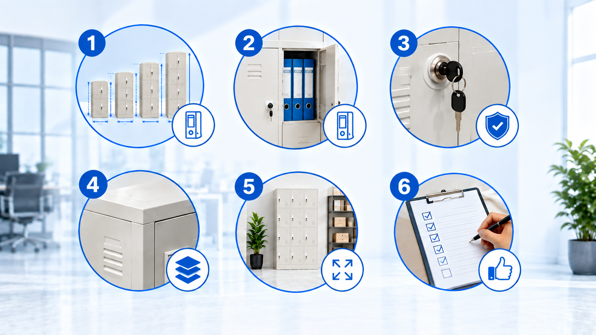

Tips Memilih Lemari Arsip Besi Berkualitas untuk Kebutuhan Kantor Modern

Penyimpanan dokumen penting perusahaan seperti berkas kontrak, laporan keuangan, dokumen legal, dan arsip kepegawaian membutuhkan media penyimpanan yang kokoh, rapi, dan tahan lama. Di lingkungan perkantoran Jakarta, lemari arsip berbahan besi telah menjadi standar utama karena keunggulannya yang jauh melampaui lemari kayu biasa.
Namun, banyaknya pilihan model, merk, dan ketebalan material di pasaran seringkali membuat divisi pengadaan atau operasional kantor bingung menentukan pilihan terbaik. Membeli lemari arsip besi yang salah dapat berakibat pada pintu yang macet, rak yang melengkung saat menahan beban ordner tebal, hingga kunci yang mudah rusak.
Untuk membantu Anda mengambil keputusan investasi yang tepat, berikut panduan dan tips esensial dalam memilih lemari arsip besi berkualitas tinggi:
1. Perhatikan Ketebalan dan Jenis Pelat Baja
Kekuatan utama sebuah lemari arsip terletak pada material dasarnya. Pastikan lemari dibuat menggunakan baja canai dingin (Cold-Rolled Steel / SPCC). Baja jenis ini memiliki kepadatan molekul yang rapat, permukaan yang rata, dan struktur yang kokoh.
Standar ketebalan yang direkomendasikan untuk beban kerja kantor aktif adalah:
- Ketebalan 0.7 mm – 0.8 mm: Standar ideal untuk penyimpanan dokumen reguler, map ordner harian, dan perlengkapan administrasi.
- Ketebalan 1.0 mm – 1.2 mm: Kategori heavy-duty, sangat disarankan untuk ruang arsip sentral dengan tumpukan dokumen sangat padat dan intensitas buka-tutup tinggi.
Hindari memilih lemari dengan pelat baja di bawah 0.6 mm karena dinding lemari akan mudah penyok dan ambalan rak rentan melorot ketika diisi penuh binder dokumen tebal.
2. Sesuaikan Tipe Pintu dengan Ruang Kantor
Tata letak dan luas ruangan kantor Anda sangat menentukan jenis pintu lemari yang paling efektif:
- Pintu Ayun (Swing Door): Memberikan akses visual dan jangkauan 100% penuh ke seluruh bagian rak. Sangat cocok jika ruang lorong di depan lemari memiliki sirkulasi gerak minimal 90–120 cm.
- Pintu Geser (Sliding Door): Pilihan paling hemat tempat untuk kantor berukuran minimalis atau koridor sempit, karena daun pintu tidak memakan ruang ke arah depan saat dibuka.
- Pintu Kaca (Glass Sliding Door): Memudahkan identifikasi posisi berkas dari luar tanpa perlu membuka pintu, cocok untuk lemari perpustakaan, berkas referensi cepat, atau sampel produk.
💡 Tips Penting Pengujian Beban Ambalan (Shelf Load Capacity)
Satu binder ordner ukuran A4/F4 penuh berisi kertas memiliki bobot sekitar 2.5 hingga 3.5 kg. Satu baris rak lemari standar biasanya menampung 10–12 ordner (total beban 30–40 kg per ambalan). Pastikan lemari yang Anda pilih memiliki ambalan yang dilengkapi rangka penguat bawah (reinforcement rib) dengan kapasitas beban minimal 40–50 kg per rak.
3. Evaluasi Sistem Penguncian dan Proteksi Berkas
Keamanan dokumen rahasia perusahaan tidak boleh diabaikan. Pastikan lemari arsip Anda memiliki fitur penguncian yang terpercaya:
Sistem Central Lock: Mekanisme satu kunci putar yang mengunci kedua bilah pintu secara simultan di bagian atas, tengah, dan bawah pintu. Desain ini mempersulit upaya pembongkaran paksa atau pencongkelan.
Selain itu, periksa ketersediaan Master Key dari penyedia lemari. Master Key sangat krusial bagi manajemen kantor jika suatu saat anak kunci operasional hilang oleh staf.
4. Finishing Cat Powder Coating Anti-Karat
Iklim tropis Jakarta dengan tingkat kelembapan udara yang fluktuatif dapat menyebabkan korosi pada logam jika proses pengecatannya buruk. Lemari arsip berkualitas tinggi selalu melalui tahap degreasing, phosphating, dan dilapisi dengan Epoxy Polyester Powder Coating yang dioven pada suhu lebih dari 180°C.
Hasilnya adalah lapisan cat yang anti-gores, tidak mudah terkelupas, tahan terhadap tumpahan cairan, dan sangat mudah dibersihkan hanya dengan lap lembap.
Perbandingan Tipe Lemari Arsip Besi
Berikut tabel ringkasan perbandingan spesifikasi untuk membantu Anda memilih produk yang paling tepat:
| Tipe Lemari | Kapasitas Ordner | Kelebihan Utama | Ideal Untuk |
|---|---|---|---|
| Lemari 2 Pintu Ayun | 40 – 50 Ordner | Bukaan luas, ambalan rak fleksibel | Ruang arsip utama & finance |
| Lemari Pintu Geser Plat | 40 – 50 Ordner | Hemat ruang lorong, tidak makan tempat | Koridor sempit & kantor kubikel |
| Lemari Pintu Geser Kaca | 40 – 50 Ordner | Visual berkas transparan & elegan | Pustaka, ruang rapat, HRD |
| Filing Cabinet 4 Laci | Map Gantung / Folder | Pencarian berkas cepat berdasarkan alfabet | Dokumen legal, akta, & arsip pribadi |
Checklist Sebelum Melakukan Pembelian
Sebelum mengeluarkan anggaran pengadaan, pastikan 5 hal berikut sudah terpenuhi:
- Ukur dimensi ruangan dan jalur pintu masuk gedung perkantoran Anda (pastikan lemari bisa masuk lift atau tangga).
- Pilih sistem perakitan Knock-Down yang presisi agar mudah dipindahkan bila kantor berpindah lokasi.
- Pastikan ambalan rak dapat diatur ketinggiannya (adjustable shelf) untuk mengakomodasi berbagai ukuran buku/map.
- Pilih merk terpercaya seperti Zeco atau Vivorti yang memiliki rekam jejak terbukti dan garansi resmi.
- Manfaatkan fasilitas survei lokasi gratis dan layanan perakitan di tempat dari penyedia terpercaya di Jakarta.
Kesimpulan
Memilih lemari arsip besi bukan sekadar membeli perabot kantor, melainkan investasi jangka panjang dalam menjaga aset intelektual dan dokumen hukum perusahaan. Dengan memperhatikan ketebalan baja, jenis pintu, sistem penguncian, serta proteksi anti-karat, Anda menjamin ruang kerja yang senantiasa rapi, efisien, dan profesional.